공인중개사-1차 (2015-10-24 기출문제)
1과목: 부동산학개론
1. 부동산학에 관한 설명으로 틀린 것은?
- 과학을 순수과학과 응용과학으로 구분할 때, 부동산학은 응용과학에 속한다.
- 부동산학의 연구대상은 부동산활동 및 부동산현상을 포함한다.
- 부동산학의 접근방법 중 종합식 접근방법은 부동산을 기술적ㆍ경제적ㆍ법률적 측면 등의 복합개념으로 이해하여, 이를 종합해서 이론을 구축하는 방법이다.
- 부동산학은 다양한 학문과 연계되어 있다는 점에서 종합학문적 성격을 지닌다.
- 부동산학의 일반원칙으로서 안전성의 원칙은 소유활동에 있어서 최유효이용을 지도원리로 삼고 있다.
(정답률: 63%)

2. 토지의 자연적 특성 중 영속성에 관한 설명으로 옳은 것을 모두 고른 것은?
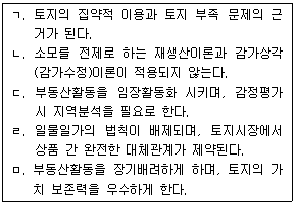
- ㄱ, ㄷ
- ㄴ, ㅁ
- ㄱ, ㄴ, ㅁ
- ㄱ, ㄷ, ㄹ
- ㄴ, ㄷ, ㄹ, ㅁ
(정답률: 56%)
3. 부동산 활동에 따른 토지의 분류 중 지적공부에 등록된 토지가 물에 침식되어 수면 밑으로 잠긴 토지는?
- 포락지(浦落地)
- 법지(法地)
- 빈지(濱地)
- 맹지(盲地)
- 소지(素地)
(정답률: 65%)
4. 부동산수요 증가에 영향을 주는 요인을 모두 고른 것은?(단, 다른 조건은 일정하다고 가정함)
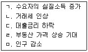
- ㄱ, ㄷ
- ㄷ, ㄹ
- ㄱ, ㄴ, ㄹ
- ㄱ, ㄷ, ㄹ
- ㄴ, ㄷ, ㄹ, ㅁ
(정답률: 63%)
5. 부동산 수요 및 공급에 관한 설명으로 틀린 것은?(단, 다른 조건은 일정하다고 가정함)
- 아파트와 단독주택의 관계가 대체재라고 가정할 때 아파트의 가격이 상승하면, 단독주택의 수요가 증가하고 단독주택의 가격은 상승한다.
- 건축기자재 가격이 상승하더라도 주택가격이 변하지 않는다면 주택공급은 감소할 것이다.
- 주택가격이 상승하면 주거용지의 공급이 감소한다.
- 완전경쟁시장에서 부동산공급량은 한계비용곡선이 가격 곡선과 일치하는 지점에서 결정된다.
- 부동산의 물리적인 공급은 단기적으로 비탄력적이라 할 수 있다.
(정답률: 55%)
6. 레일리(W.Reilly)의 소매인력법칙을 적용할 경우, 다음과 같은 상황에서 ( )에 들어갈 숫자로 옳은 것은?
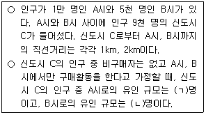
- ㄱ: 6,000, ㄴ: 3,000
- ㄱ: 6,500, ㄴ: 2,500
- ㄱ: 7,000, ㄴ: 2,000
- ㄱ: 7,500, ㄴ: 1,500
- ㄱ: 8,000, ㄴ: 1,000
(정답률: 41%)
7. A지역의 오피스텔 시장공급량(Qs)이 3P 이고, A지역의 오피스텔 시장수요함수가 Qd1=1,200-P에서 Qd2=1,600-P 로 변화하였다. 이 때 A지역 오피스텔 시장의 균형가격의 변화는?(단, P는 가격, Qd1 과 Qd2는 수요량이며, 다른 조건은 일정하다고 가정함)
- 50 하락
- 50 상승
- 100 하락
- 100 상승
- 변화 없음
(정답률: 51%)
8. 주택구입에 대한 거래세 인상에 따른 경제적 후생의 변화로 틀린 것은?(단, 우상향하는 공급곡선과 우하향하는 수요곡선을 가정하며, 다른 조건은 일정함)
- 수요곡선이 공급곡선에 비해 더 탄력적이면 수요자에 비해 공급자의 부담이 더 커진다.
- 공급곡선이 수요곡선에 비해 더 탄력적이면 공급자에 비해 수요자의 부담이 더 커진다.
- 수요자가 실질적으로 지불하는 금액이 상승하므로 소비자잉여는 감소한다.
- 공급자가 받는 가격이 하락하므로 생산자잉여는 감소한다.
- 거래세 인상에 의한 세수입 증가분은 정부에 귀속되므로 경제적 순손실은 발생하지 않는다.
(정답률: 42%)
9. 부동산금융에 관한 설명으로 틀린 것은?
- 한국주택금융공사는 주택저당채권을 기초로 하여 주택 저당증권을 발행하고 있다.
- 시장이자율이 대출약정이자율보다 높아지면 차입자는 기존대출금을 조기상환하는 것이 유리하다.
- 자금조달방법 중 부동산 신디케이트(syndicate)는 지분금융(equity financing)에 해당한다.
- 부동산금융은 부동산을 운용대상으로 하여 필요한 자금을 조달하는 일련의 과정이라 할 수 있다.
- 프로젝트금융은 비소구 또는 제한적 소구 금융의 특징을 가지고 있다.
(정답률: 52%)
10. 우리나라의 부동산투자회사(REITs)에 관한 설명으로 옳은 것은?
- 자기관리 부동산투자회사의 설립 자본금은 10억원 이상으로 한다.
- 위탁관리 부동산투자회사의 설립 자본금은 3억원 이상이며 영업인가 후 6개월 이내에 30억원을 모집하여야 한다.
- 자기관리 부동산투자회사와 기업구조조정 부동산투자회사는 모두 실체형 회사의 형태로 운영된다.
- 위탁관리 부동산투자회사는 본점 외의 지점을 설치할 수 있으며, 직원을 고용하거나 상근 임원을 둘 수 있다.
- 부동산투자회사는 금융기관으로부터 자금을 차입할 수 없다.
(정답률: 27%)
11. 주택담보대출을 희망하는 A의 소유 주택 시장가치가 3억원이고 연소득이 5,000만원이며 다른 부채가 없다면, A가 받을 수 있는 최대 대출가능 금액은?(단, 주어진 조건에 한함)
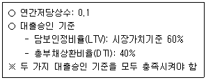
- 1억원
- 1억 5,000만원
- 1억 8,000만원
- 2억원
- 2억 2,000만원
(정답률: 46%)
12. 주택구입을 위해 은행으로부터 2억원을 대출 받았다. 대출조건이 다음과 같을 때, 2회차에 상환해야 할 원리금은?(단, 주어진 조건에 한함)
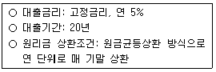
- 1,800만원
- 1,850만원
- 1,900만원
- 1,950만원
- 2,000만원
(정답률: 45%)
13. 부동산 경기변동에 관한 설명으로 틀린 것은?
- 부동산시장은 일반 경기변동과 같은 회복ㆍ상향ㆍ후퇴ㆍ하향의 4가지 국면 외에 안정시장이라는 국면이 있다.
- 부동산 경기변동 국면은 공실률, 건축허가건수, 거래량 등으로 확인할 수 있다.
- 일반 경기변동에 비해 정점과 저점 간의 진폭이 작다.
- 순환적 변동, 계절적 변동, 무작위적(불규칙, 우발적) 변동 등의 모습이 나타난다.
- 상향국면에서, 직전 회복국면의 거래사례가격은 새로운 거래가격의 하한선이 되는 경향이 있다.
(정답률: 52%)
14. X지역의 오피스텔 임대료가 10% 상승하고 오피스텔 임차수요가 15% 감소하자, 이 지역의 소형아파트 임차수요가 5% 증가하였다. X지역의 “소형아파트 임차수요의 교차탄력성”(A) 및 “소형아파트와 오피스텔의 관계”(B)로 옳은 것은?(단, 다른 조건은 일정하다고 가정함)
- A: 2.0, B: 보완재
- A: 2.0, B: 대체재
- A: 0.5, B: 보완재
- A: 0.5, B: 대체재
- A: 0.3, B: 정상재
(정답률: 45%)
15. 부동산시장에 관한 설명으로 틀린 것은?
- 부동산시장에서는 어떤 특정한 지역에 국한되는 시장의 지역성 혹은 지역시장성이 존재한다.
- 부동산시장에서는 정보의 비대칭성으로 인해 부동산 가격의 왜곡현상이 나타나기도 한다.
- 할당효율적시장에서는 부동산 거래의 은밀성으로 인해 부동산가격의 과소평가 또는 과대평가 등 왜곡가능성이 높아진다.
- 부동산 거래비용의 증가는 부동산 수요자와 공급자의 시장 진출입에 제약을 줄 수 있어 불완전경쟁시장의 요인이 될 수 있다.
- 개별성의 특성은 부동산상품의 표준화를 어렵게 할 뿐만 아니라 부동산시장을 복잡하고 다양하게 한다.
(정답률: 47%)
16. 도시공간구조이론 및 지대론에 관한 설명으로 틀린 것은?
- 해리스(C.Harris)와 울만(E.Ullman)의 다핵이론에서는 상호편익을 가져다주는 활동(들)의 집적지향성(집적이익)을 다핵입지 발생 요인 중 하나로 본다.
- 알론소(W.Alonso)의 입찰지대곡선은 여러 개의 지대곡선 중 가장 높은 부분을 연결한 포락선이다.
- 헤이그(R.Haig)의 마찰비용이론에서는 교통비와 지대를 마찰비용으로 본다.
- 리카도(D.Ricardo)의 차액지대설에서는 지대 발생 원인을 농토의 비옥도에 따른 농작물 수확량의 차이로 파악한다.
- 마샬(A.Marshall)은 일시적으로 토지의 성격을 가지는 기계, 기구 등의 생산요소에 대한 대가를 파레토지대로 정의하였다.
(정답률: 44%)
17. 부동산정책에 관한 설명으로 틀린 것은?
- 부동산에 대한 부담금제도나 보조금제도는 정부의 부동산시장에 대한 직접개입방식이다.
- 정부가 부동산시장에 개입하는 이유에는 시장실패의 보완, 부동산시장의 안정 등이 있다.
- 개발제한구역은 도시의 무질서한 팽창을 억제하는 효과가 있다.
- 공공토지비축제도는 공익사업용지의 원활한 공급과 토지시장의 안정에 기여하는 것을 목적으로 한다.
- 정부의 시장개입은 사회적 후생손실을 발생시킬 수 있다.
(정답률: 49%)
18. 토지이용규제에 관한 설명으로 틀린 것은?
- 용도지역ㆍ지구제는 토지이용계획의 내용을 구현하는 법적ㆍ행정적 수단 중 하나다.
- 토지이용규제를 통해, 토지이용에 수반되는 부(-)의 외부효과를 제거 또는 감소시킬 수 있다.
- 지구단위계획을 통해, 토지이용을 합리화하고 그 기능을 증진시키며 미관을 개선하고 양호한 환경을 확보할 수 있다.
- 용도지역ㆍ지구제는 토지이용을 제한하여 지역에 따라 지가의 상승 또는 하락을 야기할 수도 있다.
- 용도지역 중 자연환경보전지역은 도시지역 중에서 자연환경ㆍ수자원ㆍ해안ㆍ생태계ㆍ상수원 및 문화재의 보전과 수산자원의 보호ㆍ육성을 위하여 필요한 지역이다.
(정답률: 44%)
19. 정부의 주택 임대 정책에 관한 설명으로 틀린 것은?(단, 규제임대료가 시장임대료보다 낮다고 가정함)
- 주택바우처(housing voucher)는 임대료 보조 정책의 하나다.
- 임대료 보조금 지급은 저소득층의 주거 여건 개선에 기여할 수 있다.
- 임대료 규제는 장기적으로 민간 임대주택 공급을 위축시킬 우려가 있다.
- 임대료 규제는 임대부동산을 질적으로 향상시키고 기존 세입자의 주거 이동을 촉진시킨다.
- 장기전세주택이란 국가, 지방자치단체, 한국토지주택공사 또는 지방공사가 임대할 목적으로 건설 또는 매입하는 주택으로서 20년의 범위에서 전세계약의 방식으로 공급하는 임대주택을 말한다.
(정답률: 49%)
20. 외부효과에 관한 설명으로 틀린 것은?
- 외부효과란 어떤 경제활동과 관련하여 거래당사자가 아닌 제3자에게 의도하지 않은 혜택이나 손해를 가져다주면서도 이에 대한 대가를 받지도 지불하지도 않는 상태를 말한다.
- 정(+)의 외부효과가 발생하면 님비(NIMBY) 현상이 발생한다.
- 인근지역에 쇼핑몰이 개발됨에 따라 주변 아파트 가격이 상승하는 경우, 정(+)의 외부효과가 나타난 것으로 볼 수 있다.
- 부(-)의 외부효과를 발생시키는 시설의 경우, 발생된 외부효과를 제거 또는 감소시키기 위한 사회적 비용이 발생할 수 있다.
- 여러 용도가 혼재되어 있어 인접지역 간 토지이용의 상충으로 인하여 토지시장의 효율적인 작동을 저해하는 경우, 부(-)의 외부효과가 발생할 수 있다.
(정답률: 56%)
21. 부동산 투자의 기대수익률과 위험에 관한 설명으로 옳은 것은?(단, 위험회피형 투자자라고 가정함)
- 부동산 투자안이 채택되기 위해서는 요구수익률이 기대수익률보다 커야 한다.
- 평균-분산 지배원리에 따르면, A투자안과 B투자안의 기대수익률이 같은 경우, A투자안보다 B투자안의 기대 수익률의 표준편차가 더 크다면 A투자안이 선호된다.
- 투자자가 위험을 회피할수록 위험(표준편차, X축)과 기대수익률(Y축)의 관계를 나타낸 투자자의 무차별곡선의 기울기는 완만해진다.
- 투자 위험(표준편차)과 기대수익률은 부(-)의 상관관계를 가진다.
- 무위험(수익)률의 상승은 투자자의 요구수익률을 하락시키는 요인이다.
(정답률: 40%)
22. 다음의 자료를 통해 산정한 값으로 틀린 것은?(단, 주어진 조건에 한함)
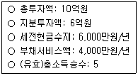
- (유효)총소득: 2억원/년
- 순소득승수: 10
- 세전현금수지승수: 10
- (종합)자본환원율: 8%
- 부채감당률: 2.5
(정답률: 37%)
23. 부동산 투자분석기법에 관한 설명으로 틀린 것은?
- 할인현금수지(discounted cash flow)법은 부동산 투자기간 동안의 현금흐름을 반영하지 못한다는 단점이 있다.
- 회계적 이익률법은 화폐의 시간가치를 고려하지 않는다.
- 순현재가치(NPV)가 0인 단일 투자안의 경우, 수익성지수(PI)는 1이 된다.
- 투자안의 경제성분석에서 민감도분석을 통해 투입요소의 변화가 그 투자안의 순현재가치에 미치는 영향을 분석할 수 있다.
- 투자금액이 동일하고 순현재가치가 모두 0보다 큰 2개의 투자안을 비교ㆍ선택할 경우, 부의 극대화 원칙에 따르면 순현재가치가 큰 투자안을 채택한다.
(정답률: 37%)
24. 포트폴리오 이론에 따른 부동산 투자의 포트폴리오 분석에 관한 설명으로 옳은 것은?
- 인플레이션, 경기변동 등의 체계적 위험은 분산투자를 통해 제거가 가능하다.
- 투자자산 간의 상관계수가 1보다 작을 경우, 포트폴리오 구성을 통한 위험절감 효과가 나타나지 않는다.
- 2개의 투자자산의 수익률이 서로 다른 방향으로 움직일 경우, 상관계수는 양(+)의 값을 가지므로 위험분산 효과가 작아진다.
- 효율적 프론티어(efficient frontier)와 투자자의 무차별 곡선이 접하는 지점에서 최적 포트폴리오가 결정된다.
- 포트폴리오에 편입되는 투자자산 수를 늘림으로써 체계적 위험을 줄여나갈 수 있으며, 그 결과로 총 위험은 줄어들게 된다.
(정답률: 44%)
25. 화폐의 시간가치에 관한 설명으로 틀린 것은?
- 연금의 미래가치계수를 계산하는 공식에서는 이자 계산 방법으로 복리 방식을 채택한다.
- 원리금균등상환 방식으로 주택저당대출을 받은 경우, 저당대출의 매 기 원리금 상환액을 계산하려면, 저당상수를 활용할 수 있다.
- 5년 후 주택구입에 필요한 자금 3억원을 모으기 위해 매 월말 불입해야 하는 적금액을 계산하려면, 3억원에 연금의 현재가치계수(월 기준)를 곱하여 구한다.
- 매 월말 50만원씩 5년간 들어올 것으로 예상되는 임대료 수입의 현재가치를 계산하려면, 저당상수(월 기준)의 역수를 활용할 수 있다.
- 상환비율과 잔금비율을 합하면 1이 된다.
(정답률: 39%)
26. 부동산 투자와 관련한 재무비율과 승수를 설명한 것으로 틀린 것은?
- 동일한 투자안의 경우, 일반적으로 순소득승수가 총소득승수보다 크다.
- 동일한 투자안의 경우, 일반적으로 세전현금수지승수가 세후현금수지승수보다 크다.
- 부채감당률(DCR)이 1보다 작으면, 투자로부터 발생하는 순영업소득이 부채서비스액을 감당할 수 없다고 판단된다.
- 담보인정비율(LTV)을 통해서 투자자가 재무레버리지를 얼마나 활용하고 있는지를 평가할 수 있다.
- 총부채상환비율(DTI)은 차입자의 상환능력을 평가할 때 사용할 수 있다.
(정답률: 34%)
27. 대출 상환 방식에 관한 설명으로 옳은 것을 모두 고른 것은?(단, 대출금액과 기타 대출조건은 동일함)
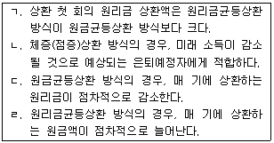
- ㄱ, ㄴ
- ㄱ, ㄷ
- ㄱ, ㄹ
- ㄴ, ㄹ
- ㄷ, ㄹ
(정답률: 41%)
28. 부동산관리에 관한 설명으로 틀린 것은?
- 법률적 측면의 부동산관리는 부동산의 유용성을 보호하기 위하여 법률상의 제반 조치를 취함으로써 법적인 보장을 확보하려는 것이다.
- 시설관리(facility management)는 부동산시설을 운영하고 유지하는 것으로 시설사용자나 기업의 요구에 따르는 소극적 관리에 해당한다.
- 자기(직접)관리방식은 전문(위탁)관리방식에 비해 기밀유지에 유리하고 의사결정이 신속한 경향이 있다.
- 임차 부동산에서 발생하는 총수입(매상고)의 일정 비율을 임대료로 지불한다면, 이는 임대차의 유형 중 비율 임대차에 해당한다.
- 경제적 측면의 부동산관리는 대상 부동산의 물리적ㆍ기능적 하자의 유무를 판단하여 필요한 조치를 취하는 것이다.
(정답률: 42%)
29. 부동산마케팅에 관한 설명으로 틀린 것은?
- 셀링포인트(selling point)는, 상품으로서 부동산이 지니는 여러 특징 중 구매자(고객)의 욕망을 만족시켜 주는 특징을 말한다.
- 고객점유 마케팅 전략이란 공급자 중심의 마케팅 전략으로 표적시장을 선정하거나 틈새시장을 점유하는 전략을 말한다.
- 관계마케팅 전략에서는 공급자와 소비자의 관계를 일회적이 아닌 지속적인 관계로 유지하려 한다.
- STP전략은 시장세분화(segmentation), 표적시장 선정(targeting), 포지셔닝(positioning)으로 구성된다.
- AIDA는 주의(attention), 관심(interest), 욕망(desire), 행동(action)의 단계가 있다.
(정답률: 47%)
30. 건물의 내용연수와 생애주기 및 관리방식에 관한 설명으로 틀린 것은?
- 건물과 부지와의 부적응, 설계 불량, 설비 불량, 건물의 외관과 디자인 낙후는 기능적 내용연수에 영향을 미치는 요인이다.
- 인근지역의 변화, 인근환경과 건물의 부적합, 당해지역 건축물의 시장성 감퇴는 경제적 내용연수에 영향을 미치는 요인이다.
- 건물의 생애주기 단계 중 안정단계에서 건물의 양호한 관리가 이루어진다면 안정단계의 국면이 연장될 수 있다.
- 건물의 생애주기 단계 중 노후단계는 일반적으로 건물의 구조, 설비, 외관 등이 악화되는 단계이다.
- 건물의 관리에 있어서 재무ㆍ회계관리, 시설이용ㆍ임대차 계약, 인력관리는 위탁하고, 청소를 포함한 그 외 나머지는 소유자가 직접관리할 경우, 이는 전문(위탁)관리 방식에 해당한다.
(정답률: 43%)
31. 민간의 부동산개발 방식에 관한 설명으로 틀린 것은?
- 자체개발사업에서는 사업시행자의 주도적인 사업추진이 가능하나 사업의 위험성이 높을 수 있어 위기관리능력이 요구된다.
- 토지소유자가 제공한 토지에 개발업자가 공사비를 부담하여 부동산을 개발하고, 개발된 부동산을 제공된 토지 가격과 공사비의 비율에 따라 나눈다면, 이는 등가교환 방식에 해당된다.
- 토지신탁(개발)방식과 사업수탁방식은 형식의 차이가 있으나, 소유권을 이전하고 사업주체가 토지소유자가 된다는 점이 동일하다.
- 개발 사업에 있어서 사업자금 조달 또는 상호 기술 보완 등 필요에 따라 법인 간에 컨소시엄을 구성하여 사업을 추진한다면, 이는 컨소시엄구성방식에 해당된다.
- 토지소유자가 사업을 시행하면서 건설업체에 공사를 발주하고 공사비의 지급은 분양 수입금으로 지급한다면, 이는 분양금 공사비 지급(청산)형 사업방식에 해당된다.
(정답률: 45%)
32. 부동산개발이 다음과 같은 5단계만 진행된다고 가정할때, 일반적인 진행 순서로 적절한 것은?(순서대로 1단계, 2단계, 3단계, 4단계, 5단계)
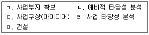
- ㄷ → ㄴ → ㄱ → ㄹ → ㅁ
- ㄷ → ㄱ → ㄴ → ㅁ → ㄹ
- ㄴ → ㄷ → ㄹ → ㄱ → ㅁ
- ㄴ → ㄹ → ㄱ → ㄷ → ㅁ
- ㄴ → ㄱ → ㄹ → ㄷ → ㅁ
(정답률: 44%)
33. 다음에서 설명하는 민간투자 사업방식은?
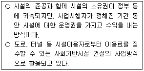
- BOT(build-operate-transfer) 방식
- BTO(build-transfer-operate) 방식
- BLT(build-lease-transfer) 방식
- BTL(build-transfer-lease) 방식
- BOO(build-own-operate) 방식
(정답률: 45%)
34. 토지 취득방식에 따라 개발방식을 분류할 때, 다음에서 설명하는 개발방식은?
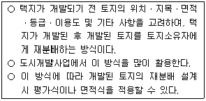
- 환지방식
- 단순개발방식
- 매수방식
- 혼합방식
- 수용방식
(정답률: 51%)
35. 제시된 자료를 활용해 감정평가에 관한 규칙에서 정한 공시지가기준법으로 평가한 토지 평가액(원/m2 )은?
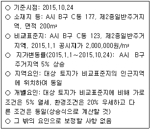
- 1,995,000원/m2
- 2,100,000원/m2
- 2,280,000원/m2
- 2,394,000원/m2
- 2,520,000원/m2
(정답률: 39%)
36. 감정평가에 관한 규칙에서 직접 규정하고 있는 사항이 아닌 것은?
- 시장가치기준 원칙
- 현황기준 원칙
- 개별물건기준 원칙
- 원가방식, 비교방식, 수익방식
- 최유효이용 원칙
(정답률: 40%)
37. 감정평가에 관한 규칙상 감정평가방법에 관한 설명으로 틀린 것은?
- 건물의 주된 평가방법은 원가법이다.
- 「집합건물의 소유 및 관리에 관한 법률」에 따른 구분 소유권의 대상이 되는 건물부분과 그 대지사용권을 일괄하여 감정평가하는 경우 거래사례비교법을 주된 평가 방법으로 적용한다.
- 임대료를 평가할 때는 적산법을 주된 평가방법으로 적용한다.
- 영업권, 특허권 등 무형자산은 수익환원법을 주된 평가 방법으로 적용한다.
- 자동차의 주된 평가방법과 선박 및 항공기의 주된 평가 방법은 다르다.
(정답률: 39%)
38. 부동산 가격공시 및 감정평가에 관한 법령상 공시가격에 관한 설명으로 틀린 것은?
- 표준지공시지가의 공시기준일은 원칙적으로 매년 1월 1일이다.
- 토지를 평가하는 공시지가기준법은 표준지공시지가를 기준으로 한다.
- 개별공시지가를 결정하기 위해 토지가격비준표가 활용된다.
- 표준주택은 단독주택과 공동주택 중에서 각각 대표성 있는 주택을 선정한다.
- 표준지공시지가와 표준주택가격 모두 이의신청 절차가 있다.
(정답률: 42%)
39. 다음은 감정평가방법에 관한 설명이다. ( )에 들어갈 내용으로 옳은 것은?
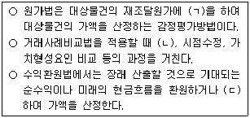
- ㄱ: 감가수정, ㄴ: 사정보정, ㄷ: 할인
- ㄱ: 감가수정, ㄴ: 지역요인비교, ㄷ: 할인
- ㄱ: 사정보정, ㄴ: 감가수정, ㄷ: 할인
- ㄱ: 사정보정, ㄴ: 개별요인비교, ㄷ: 공제
- ㄱ: 감가수정, ㄴ: 사정보정, ㄷ: 공제
(정답률: 43%)
40. 부동산 가격원칙(혹은 평가원리)에 관한 설명으로 틀린 것은?
- 최유효이용은 대상 부동산의 물리적 채택가능성, 합리적이고 합법적인 이용, 최고 수익성을 기준으로 판정할 수 있다.
- 균형의 원칙은 구성요소의 결합에 대한 내용으로, 균형을 이루지 못하는 과잉부분은 원가법을 적용할 때 경제적 감가로 처리한다.
- 적합의 원칙은 부동산의 입지와 인근환경의 영향을 고려한다.
- 대체의 원칙은 부동산의 가격이 대체관계의 유사부동산으로부터 영향을 받는다는 점에서, 거래사례비교법의 토대가 될 수 있다.
- 예측 및 변동의 원칙은 부동산의 현재보다 장래의 활용 및 변화 가능성을 고려한다는 점에서, 수익환원법의 토대가 될 수 있다.
(정답률: 36%)
2과목: 민법 및 민사특별법
41. 통정허위표시의 무효는 선의의 ‘제3자’에게 대항하지 못한다는 규정의 ‘제3자’에 해당하는 자를 모두 고른 것은?(다툼이 있으면 판례에 따름)
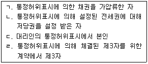
- ㄱ, ㄴ
- ㄱ, ㄷ
- ㄴ, ㄷ
- ㄴ, ㄹ
- ㄷ, ㄹ
(정답률: 40%)
42. 준법률행위인 것은?(다툼이 있으면 판례에 따름)
- 법정대리인의 동의
- 착오에 의한 의사표시의 취소
- 채무이행의 최고
- 무권대리행위에 대한 추인
- 임대차계약의 해지
(정답률: 38%)
43. 甲은 토지거래허가구역 내 자신의 토지를 乙에게 매도하였고 곧 토지거래허가를 받기로 하였다. 다음 설명 중 옳은 것을 모두 고른 것은?(다툼이 있으면 판례에 따름)
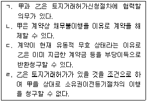
- ㄱ, ㄴ, ㄹ
- ㄱ, ㄷ
- ㄱ, ㄹ
- ㄴ, ㄷ
- ㄴ, ㄹ
(정답률: 39%)
44. 반사회질서의 법률행위로서 무효인 것을 모두 고른 것은?(다툼이 있으면 판례에 따름)
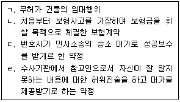
- ㄱ, ㄴ
- ㄴ
- ㄴ, ㄹ
- ㄷ
- ㄷ, ㄹ
(정답률: 47%)
45. 무권대리에 관한 설명으로 옳은 것은?(다툼이 있으면 판례에 따름)
- 무권대리행위의 일부에 대한 추인은 상대방의 동의를 얻지 못하는 한 효력이 없다.
- 무권대리행위를 추인한 경우 원칙적으로 추인한 때로부터 유권대리와 마찬가지의 효력이 생긴다.
- 무권대리행위의 추인의 의사표시는 본인이 상대방에게 하지 않으면, 상대방이 그 사실을 알았더라도 상대방에게 대항하지 못한다.
- 무권대리인의 계약상대방은 계약 당시 대리권 없음을 안 경우에도 본인에 대해 계약을 철회할 수 있다.
- 무권대리행위가 무권대리인의 과실없이 제3자의 기망 등 위법행위로 야기된 경우, 특별한 사정이 없는 한 무권대리인은 상대방에게 책임을 지지 않는다.
(정답률: 32%)
46. 甲은 자신의 X토지를 乙에게 매도하고 중도금을 수령한 후, 다시 丙에게 매도하고 소유권이전등기까지 경료해 주었다. 다음 설명 중 틀린 것은?(다툼이 있으면 판례에 따름)
- 특별한 사정이 없는 한 丙은 X토지의 소유권을 취득한다.
- 특별한 사정이 없는 한 乙은 최고 없이도 甲과의 계약을 해제할 수 있다.
- 丙이 甲의 乙에 대한 배임행위에 적극 가담한 경우, 乙은 丙을 상대로 직접 등기의 말소를 청구할 수 없다.
- 甲과 丙의 계약이 사회질서 위반으로 무효인 경우, 丙으로부터 X토지를 전득한 丁은 선의이더라도 그 소유권을 취득하지 못한다.
- 만약 丙의 대리인 戊가 丙을 대리하여 X토지를 매수하면서 甲의 배임행위에 적극 가담하였다면, 그러한 사정을 모르는 丙은 그 소유권을 취득한다.
(정답률: 39%)
47. 표현대리에 관한 설명으로 옳은 것은?(다툼이 있으면 판례에 따름)
- 상대방의 유권대리 주장에는 표현대리의 주장도 포함된다.
- 권한을 넘은 표현대리의 기본대리권은 대리행위와 같은 종류의 행위에 관한 것이어야 한다.
- 권한을 넘은 표현대리의 기본대리권에는 대리인에 의하여 선임된 복대리인의 권한도 포함된다.
- 대리권수여표시에 의한 표현대리에서 대리권수여표시는 대리권 또는 대리인이라는 표현을 사용한 경우에 한정 된다.
- 대리권소멸 후의 표현대리가 인정되고 그 표현대리의 권한을 넘는 대리행위가 있는 경우, 권한을 넘은 표현 대리가 성립할 수 없다.
(정답률: 37%)
48. 미성년자 甲은 법정대리인 丙의 동의없이 자신의 토지를 甲이 미성년자임을 안 乙에게 매도하고 대금수령과 동시에 소유권이전등기를 해주었는데, 丙이 甲의 미성년을 이유로 계약을 적법하게 취소하였다. 다음 설명 중 틀린 것은?(다툼이 있으면 판례에 따름)
- 계약은 소급적으로 무효가 된다.
- 甲이 미성년자임을 乙이 몰랐더라도 丙은 계약을 취소 할 수 있다.
- 甲과 乙의 반환의무는 서로 동시이행관계에 있다.
- 甲이 대금을 모두 생활비로 사용한 경우 대금 전액을 반환하여야 한다.
- 만약 乙이 선의의 丁에게 매도하고 이전등기하였다면, 丙이 취소하였더라도 丁은 소유권을 취득한다.
(정답률: 32%)
49. 착오에 관한 설명으로 옳은 것은?(다툼이 있으면 판례에 따름)
- 매도인이 계약을 적법하게 해제한 후에도 매수인은 계약해제에 따른 불이익을 면하기 위하여 중요부분의 착오를 이유로 취소권을 행사하여 계약 전체를 무효로 할 수 있다.
- 표의자가 착오를 이유로 의사표시를 취소한 경우, 취소된 의사표시로 인해 손해를 입은 상대방은 불법행위를 이유로 손해배상을 청구할 수 있다.
- 착오에 의한 의사표시로 표의자가 경제적 불이익을 입지 않더라도 착오를 이유로 그 의사표시를 취소할 수 있다.
- 착오가 표의자의 중대한 과실로 인한 경우에는 상대방이 표의자의 착오를 알고 이용하더라도 표의자는 의사표시를 취소할 수 없다.
- 표의자의 중대한 과실 유무는 착오에 의한 의사표시의 효력을 부인하는 자가 증명하여야 한다.
(정답률: 37%)
50. 乙은 甲의 X토지에 건물을 소유하기 위하여 지상권을 설정받았다. 다음 설명 중 옳은 것은?(다툼이 있으면 판례에 따름)
- 乙은 甲의 의사에 반하여 제3자에게 지상권을 양도할 수 없다.
- X토지를 양수한 자는 지상권의 존속 중에 乙에게 그 토지의 인도를 청구할 수 없다.
- 乙이 약정한 지료의 1년 6개월분을 연체한 경우, 甲은 지상권의 소멸을 청구할 수 있다.
- 존속기간의 만료로 지상권이 소멸한 경우, 건물이 현존하더라도 乙은 계약의 갱신을 청구할 수 없다.
- 지상권의 존속기간을 정하지 않은 경우, 甲은 언제든지 지상권의 소멸을 청구할 수 있다.
(정답률: 34%)
51. 제사주재자인 장남 甲은 1985년 乙의 토지에 허락 없이 부친의 묘를 봉분 형태로 설치한 이래 2015년 현재까지 평온ㆍ공연하게 분묘의 기지(基地)를 점유하여 분묘의 수호와 봉사를 계속하고 있다. 다음 설명 중 옳은 것은?(다툼이 있으면 판례에 따름)(관련 규정 개정전 문제로 여기서는 기존 정답인 4번을 누르면 정답 처리됩니다. 자세한 내용은 해설을 참고하세요.)
- 乙은 甲에게 분묘의 이장을 청구할 수 있다.
- 甲은 乙에게 분묘기지에 대한 소유권이전등기를 청구할 수 있다.
- 甲은 부친의 묘에 모친의 시신을 단분(單墳) 형태로 합장할 권능이 있다.
- 甲이 분묘기지권을 포기하는 의사를 표시한 경우 점유의 포기가 없더라도 분묘기지권이 소멸한다.
- 甲은 乙에게 지료를 지급할 의무가 있다.
(정답률: 39%)
52. 지역권에 관한 설명으로 틀린 것은?
- 1필의 토지 일부를 승역지로 하여 지역권을 설정할 수 있다.
- 요역지의 공유자 1인이 지역권을 취득한 때에는 다른 공유자도 이를 취득한다.
- 지역권은 요역지와 분리하여 양도하지 못한다.
- 요역지의 소유자는 지역권에 필요한 부분의 토지소유권을 지역권설정자에게 위기(委棄)하여 공작물의 설치나 수선의무의 부담을 면할 수 있다.
- 지역권자에게는 방해제거청구권과 방해예방청구권이 인정된다.
(정답률: 39%)
53. 물권에 관한 설명으로 옳은 것은?(다툼이 있으면 판례에 따름)
- 지상권은 본권이 아니다.
- 온천에 관한 권리는 관습법상의 물권이다.
- 타인의 토지에 대한 관습법상 물권으로서 통행권이 인정된다.
- 근린공원을 자유롭게 이용한 사정만으로 공원이용권이라는 배타적 권리를 취득하였다고 볼 수는 없다.
- 미등기 무허가건물의 양수인은 소유권이전등기를 경료 받지 않아도 소유권에 준하는 관습법상의 물권을 취득한다.
(정답률: 41%)
54. 乙은 丙의 토지 위에 있는 甲소유의 X건물을 매수하여 대금완납 후 그 건물을 인도받고 등기서류를 교부받았지만, 아직 이전등기를 마치지 않았다. 다음 설명 중 틀린 것은?(다툼이 있으면 판례에 따름)
- 甲의 채권자가 X건물에 대해 강제집행하는 경우, 乙은 이의를 제기하지 못한다.
- X건물로 인해 丙의 토지가 불법점거당하고 있다면, 丙은 乙에게 X건물의 철거를 청구할 수 있다.
- X건물의 점유를 방해하는 자에 대해 乙은 점유권에 기한 방해제거청구권을 행사할 수 있다.
- 乙은 X건물로부터 생긴 과실(果實)의 수취권을 가진다.
- 乙로부터 X건물을 다시 매수하여 점유ㆍ사용하고 있는 丁에 대하여 甲은 소유권에 기한 물권적 청구권을 행사 할 수 있다.
(정답률: 28%)
55. 등기에 관한 설명으로 옳은 것은?(다툼이 있으면 판례에 따름)
- 법률행위를 원인으로 하여 소유권이전등기를 명하는 판결에 따른 소유권의 취득에는 등기를 요하지 않는다.
- 상속인은 피상속인의 사망과 더불어 상속재산인 부동산에 대한 등기를 한 때 소유권을 취득한다.
- 피담보채권이 소멸하더라도 저당권의 말소등기가 있어야 저당권이 소멸한다.
- 민사집행법상 경매의 매수인은 등기를 하여야 소유권을 취득할 수 있다.
- 기존 건물 멸실 후 건물이 신축된 경우, 기존 건물에 대한 등기는 신축건물에 대한 등기로서 효력이 없다.
(정답률: 41%)
56. 점유에 관한 설명으로 옳은 것은?(다툼이 있으면 판례에 따름)
- 점유자의 점유가 자주점유인지 타주점유인지의 여부는 점유자 내심의 의사에 의하여 결정된다.
- 점유자의 점유권원에 관한 주장이 인정되지 않는다는 것만으로도 자유점유의 추정이 깨진다.
- 점유물이 멸실ㆍ훼손된 경우, 선의의 타주점유자는 이익이 현존하는 한도 내에서 회복자에게 배상책임을 진다.
- 악의의 점유자는 과실(過失)없이 과실(果實)을 수취하지 못한 때에도 그 과실(果實)의 대가를 회복자에게 보상 하여야 한다.
- 점유자의 특정승계인이 자기의 점유와 전(前)점유자의 점유를 아울러 주장하는 경우, 그 하자도 승계한다.
(정답률: 36%)
57. 상린관계에 관한 설명으로 틀린 것은?
- 서로 인접한 토지의 통상의 경계표를 설치하는 경우, 측량비용을 제외한 설치비용은 다른 관습이 없으면 쌍방이 토지면적에 비례하여 부담한다.
- 甲과 乙이 공유하는 토지가 甲의 토지와 乙의 토지로 분할됨으로 인하여 甲의 토지가 공로에 통하지 못하게 된 경우, 甲은 공로에 출입하기 위하여 乙의 토지를 통행할 수 있으나, 乙에게 보상할 의무는 없다.
- 인지소유자는 자기의 비용으로 담의 높이를 통상보다 높게 할 수 있다.
- 토지소유자는 과다한 비용이나 노력을 요하지 아니하고는 토지이용에 필요한 물을 얻기 곤란한 때에는 이웃 토지소유자에게 보상하고 여수(餘水)의 급여를 청구할 수 있다.
- 지상권자는 지상권의 목적인 토지의 경계나 그 근방에서 건물을 수선하기 위하여 필요한 범위 내에서 이웃토지의 사용을 청구할 수 있다.
(정답률: 32%)
58. 시효취득을 할 수 없는 것은?(다툼이 있으면 판례에 따름)
- 저당권
- 계속되고 표현된 지역권
- 지상권
- 국유재산 중 일반재산
- 성명불상자(姓名不詳者)의 토지
(정답률: 40%)
59. X토지를 甲이 2/3지분, 乙이 1/3지분으로 등기하여 공유하면서 그 관리방법에 관해 별도로 협의하지 않았다. 다음 설명 중 틀린 것은?(다툼이 있으면 판례에 따름)
- 丙이 甲으로부터 X토지의 특정부분의 사용ㆍ수익을 허락받아 점유하는 경우, 乙은 丙을 상대로 그 토지부분의 반환을 청구할 수 있다.
- 甲이 부정한 방법으로 X토지 전부에 관한 소유권이전 등기를 甲의 단독명의로 행한 경우, 乙은 甲을 상대로 자신의 지분에 관하여 그 등기의 말소를 청구할 수 있다.
- X토지에 관하여 丁 명의로 원인무효의 소유권이전등기가 경료되어 있는 경우, 乙은 丁을 상대로 그 등기 전부의 말소를 청구할 수 있다.
- 戊가 X토지 위에 무단으로 건물을 신축한 경우, 乙은 특별한 사유가 없는 한 자신의 지분에 대응하는 비율의 한도 내에서만 戊를 상대로 손해배상을 청구할 수 있다.
- X토지가 나대지인 경우, 甲은 乙의 동의 없이 건물을 신축할 수 없다.
(정답률: 32%)
60. 저당권에 관한 설명으로 틀린 것은?(다툼이 있으면 판례에 따름)
- 저당권자는 목적물 반환청구권을 갖지 않는다.
- 저당부동산의 종물에는 저당권의 효력이 미치지 않는다는 약정은 등기하지 않더라도 제3자에 대해 효력이 있다.
- 원본의 반환이 2년간 지체된 경우 채무자는 원본 및 지연배상금의 전부를 변제하여야 저당권등기의 말소를 청구할 수 있다.
- 저당권은 그 담보하는 채권과 분리하여 다른 채권의 담보로 하지 못한다.
- 저당권이 설정된 토지가「공익사업을 위한 토지 등의 취득 및 보상에 관한 법률」에 따라 협의취득된 경우, 저당권자는 토지소유자가 수령할 보상금에 대하여 물상 대위를 할 수 없다.
(정답률: 26%)
61. 전세권에 관한 설명으로 옳은 것은?
- 원전세권자가 소유자의 동의 없이 전전세를 하면 원전 세권은 소멸한다.
- 건물에 대한 전세권이 법정갱신되는 경우 그 존속기간은 2년으로 본다.
- 제3자가 불법 점유하는 건물에 대해 용익목적으로 전세권을 취득한 자는 제3자를 상대로 건물의 인도를 청구할 수 있다.
- 전세권자는 특약이 없는 한 목적물의 현상을 유지하기 위해 지출한 필요비의 상환을 청구할 수 있다.
- 전전세권자는 원전세권이 소멸하지 않은 경우에도 전전세권의 목적 부동산에 대해 경매를 신청할 수 있다.
(정답률: 31%)
62. 유치권에 관한 설명으로 옳은 것은?(다툼이 있으면 판례에 따름)
- 목적물에 대한 점유를 취득한 뒤 그 목적물에 관하여 성립한 채권을 담보하기 위한 유치권은 인정되지 않는다.
- 채권자가 채무자를 직접점유자로 하여 간접점유하는 경우에도 유치권은 성립할 수 있다.
- 유치권자가 점유를 침탈당한 경우 점유보호청구권과 유치권에 기한 반환청구권을 갖는다.
- 유치권자는 유치물의 보존에 필요하더라도 채무자의 승낙 없이는 유치물을 사용할 수 없다.
- 임대차종료 후 법원이 임차인의 유익비상환청구권에 유예기간을 인정한 경우, 임차인은 그 기간 내에는 유익비상환청구권을 담보하기 위해 임차목적물을 유치할 수 없다.
(정답률: 28%)
63. 甲은 그 소유 나대지(X토지)에 乙의 저당권을 설정한 뒤 건물을 신축하였다. 다음 중 옳은 것을 모두 고른 것은?(다툼이 있으면 판례에 따름)
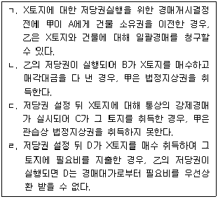
- ㄱ, ㄴ
- ㄱ, ㄹ
- ㄴ, ㄹ
- ㄷ
- ㄷ, ㄹ
(정답률: 28%)
64. 근저당권에 관한 설명으로 틀린 것은?(다툼이 있으면 판례에 따름)
- 피담보채무의 확정 전에는 채무자를 변경할 수 없다.
- 1년분이 넘는 지연배상금이라도 채권최고액의 한도 내라면 전액 근저당권에 의해 담보된다.
- 근저당권이 성립하기 위해서는 그 설정행위와 별도로 피담보채권을 성립시키는 법률행위가 있어야 한다.
- 후순위 근저당권자가 경매를 신청한 경우 선순위 근저당권의 피담보채권은 매각대금이 완납된 때에 확정된다.
- 선순위 근저당권의 확정된 피담보채권액이 채권최고액을 초과하는 경우, 후순위 근저당권자가 그 채권최고액을 변제하더라도, 선순위 근저당권의 소멸을 청구할 수 없다.
(정답률: 27%)
65. 계약의 청약과 승낙에 관한 설명으로 옳은 것은?
- 격지자간의 청약은 이를 자유로이 철회할 수 있다.
- 청약은 상대방 있는 의사표시이므로 청약할 때 상대방이 특정되어야 한다.
- 청약자가 그 통지를 발송한 후 도달 전에 사망한 경우, 청약은 효력을 상실한다.
- 격지자간의 계약은 승낙의 통지가 도달한 때에 성립한다.
- 승낙기간을 정하여 청약을 하였으나 청약자가 승낙의 통지를 그 기간 내에 받지 못한 경우, 원칙적으로 청약은 효력을 상실한다.
(정답률: 33%)
66. 계약의 유형에 관한 설명으로 틀린 것은?
- 예약은 채권계약이다.
- 전형계약 중 쌍무계약은 유상계약이다.
- 교환계약은 요물계약이다.
- 매매계약은 쌍무계약이다.
- 임대차계약은 유상계약이다.
(정답률: 37%)
67. 동시이행의 항변권에 관한 설명으로 옳은 것은?(다툼이 있으면 판례에 따름)
- 동시이행관계에 있는 쌍방의 채무 중 어느 한 채무가 이행불능이 되어 손해배상채무로 바뀌는 경우, 동시이행의 항변권은 소멸한다.
- 임대차 종료 후 보증금을 반환받지 못한 임차인이 동시이행의 항변권에 기하여 임차목적물을 점유하는 경우, 불법점유로 인한 손해배상책임을 진다.
- 동시이행의 항변권은 당사자의 주장이 없어도 법원이 직권으로 고려할 사항이다.
- 채권자의 이행청구소송에서 채무자가 주장한 동시이행의 항변이 받아들여진 경우, 채권자는 전부 패소판결을 받게 된다.
- 선이행의무자가 이행을 지체하는 동안에 상대방의 채무의 변제기가 도래한 경우, 특별한 사정이 없는 한 쌍방의 의무는 동시이행관계가 된다.
(정답률: 35%)
68. 甲은 자신의 토지를 乙에게 매도하면서 그 대금은 乙이 甲의 의무이행과 동시에 丙에게 지급하기로 약정하고, 丙은 乙에게 수익의 의사표시를 하였다. 다음 설명 중 틀린 것은?(다툼이 있으면 판례에 따름)
- 丙은 乙의 채무불이행을 이유로 甲과 乙의 매매계약을 해제할 수 없다.
- 甲과 乙의 매매계약이 적법하게 취소된 경우, 丙의 급부청구권은 소멸한다.
- 甲이 乙에게 매매계약에 따른 이행을 하지 않더라도, 乙은 특별한 사정이 없는 한 丙에게 대금지급을 거절할 수 없다.
- 丙이 수익의 의사표시를 한 후에는 특별한 사정이 없는 한 甲과 乙의 합의에 의해 丙의 권리를 소멸시킬 수 없다.
- 丙이 대금을 수령하였으나 매매계약이 무효인 것으로 판명된 경우, 특별한 사정이 없는 한 乙은 丙에게 대금반환을 청구할 수 없다.
(정답률: 36%)
69. 계약의 해제에 관한 설명으로 틀린 것은?(다툼이 있으면 판례에 따름)
- 계약이 합의해제된 경우, 특약이 없는 한 반환할 금전에 그 받은 날로부터 이자를 붙여 지급할 의무가 없다.
- 계약의 상대방이 여럿인 경우, 해제권자는 그 전원에 대하여 해제권을 행사하여야 한다.
- 매매계약의 해제로 인하여 양당사자가 부담하는 원상회복의무는 동시이행의 관계에 있다.
- 성질상 일정한 기간 내에 이행하지 않으면 그 목적을 달성할 수 없는 계약에서 당사자 일방이 그 시기에 이행하지 않으면 해제의 의사표시가 없더라도 해제의 효과가 발생한다.
- 매매대금채권이 양도된 후 매매계약이 해제된 경우, 그양수인은 해제로 권리를 침해당하지 않는 제3자에 해당하지 않는다.
(정답률: 28%)
70. 계약금에 관한 설명으로 틀린 것은?(다툼이 있으면 판례에 따름)
- 계약금은 별도의 약정이 없는 한 해약금으로 추정된다.
- 매매해약금에 관한 민법 규정은 임대차에도 적용된다.
- 해약금에 기해 계약을 해제하는 경우에는 원상회복의 문제가 생기지 않는다.
- 토지거래허가구역 내 토지에 관한 매매계약을 체결하고 계약금만 지급한 상태에서 거래허가를 받은 경우, 다른 약정이 없는 한 매도인은 계약금의 배액을 상환하고 계약을 해제할 수 없다.
- 계약금만 수령한 매도인이 매수인에게 계약의 이행을 최고하고 매매잔금의 지급을 청구하는 소송을 제기한 경우, 다른 약정이 없는 한 매수인은 계약금을 포기하고 계약을 해제할 수 있다.
(정답률: 34%)
71. 매매에 관한 설명으로 틀린 것은?(다툼이 있으면 판례에 따름)
- 매매비용을 매수인이 전부 부담한다는 약정은 특별한 사정이 없는 한 유효하다.
- 지상권은 매매의 대상이 될 수 없다.
- 매매목적물의 인도와 동시에 대금을 지급할 경우, 그 인도장소에서 대금을 지급하여야 한다.
- 매매목적물이 인도되지 않고 대금도 완제되지 않은 경우, 목적물로부터 생긴 과실은 매도인에게 속한다.
- 당사자 사이에 행사기간을 정하지 않은 매매의 예약완결권은 그 예약이 성립한 때로부터 10년 내에 행사하여야 한다.
(정답률: 37%)
72. 임차인의 권리에 관한 설명으로 옳은 것은?(다툼이 있으면 판례에 따름)
- 임차물에 필요비를 지출한 임차인은 임대차 종료 시 그 가액증가가 현존한 때에 한하여 그 상환을 청구할 수 있다.
- 건물임차인이 그 사용의 편익을 위해 임대인으로부터 부속물을 매수한 경우, 임대차 종료 전에도 임대인에게 그 매수를 청구할 수 있다.
- 건물소유를 목적으로 한 토지임대차를 등기하지 않았더라도, 임차인이 그 지상건물의 보존등기를 하면, 토지임 대차는 제3자에 대하여 효력이 생긴다.
- 건물소유를 목적으로 한 토지임대차의 기간이 만료된 경우, 임차인은 계약갱신의 청구 없이도 매도인에게 건물의 매수를 청구할 수 있다.
- 토지임대차가 묵시적으로 갱신된 경우, 임차인은 언제 든지 해지통고 할 수 있으나, 임대인은 그렇지 않다.
(정답률: 27%)
73. 건물임대인 甲의 동의를 얻어 임차인 乙이 丙과 전대차계약을 체결하고 그 건물을 인도해 주었다. 옳은 것을 모두 고른 것은?(다툼이 있으면 판례에 따름)
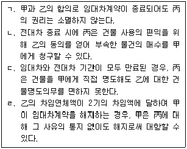
- ㄱ, ㄷ
- ㄱ, ㄹ
- ㄴ, ㄷ
- ㄴ, ㄹ
- ㄷ, ㄹ
(정답률: 31%)
74. 매도인의 담보책임에 관한 설명으로 옳은 것은?(다툼이 있으면 판례에 따름)
- 타인의 권리를 매도한 자가 그 전부를 취득하여 매수인에게 이전할 수 없는 경우, 악의의 매수인은 계약을 해제할 수 없다.
- 저당권이 설정된 부동산의 매수인이 저당권의 행사로 그 소유권을 취득할 수 없는 경우, 악의의 매수인은 특별한 사정이 없는 한 계약을 해제하고 손해배상을 청구 할 수 있다.
- 매매목적인 권리의 전부가 타인에게 속하여 권리의 전부를 이전할 수 없게 된 경우, 매도인은 선의의 매수인에게 신뢰이익을 배상하여야 한다.
- 매매목적 부동산에 전세권이 설정된 경우, 계약의 목적달성 여부와 관계없이, 선의의 매수인은 계약을 해제할 수 있다.
- 권리의 일부가 타인에게 속한 경우, 선의의 매수인이 갖는 손해배상청구권은 계약한 날로부터 1년 내에 행사되어야 한다.
(정답률: 26%)
75. 주택임대차보호법에 관한 설명으로 옳은 것은?(다툼이 있으면 판례에 따름)
- 주민등록의 신고는 행정청이 수리한 때가 아니라, 행정청에 도달한 때 효력이 발생한다.
- 등기명령의 집행에 따라 주택 전부에 대해 타인 명의의 임차권등기가 끝난 뒤 소액보증금을 내고 그 주택을 임차한 자는 최우선변제권을 행사할 수 없다.
- 임차권보다 선순위의 저당권이 존재하는 주택이 경매로 매각된 경우, 경매의 매수인은 임대인의 지위를 승계한다.
- 소액임차인은 경매신청의 등기 전까지 임대차계약서에 확정일자를 받아야 최우선변제권을 행사할 수 있다.
- 주택임차인의 우선변제권은 대지의 환가대금에는 미치지 않는다.
(정답률: 27%)
76. 집합건물의 소유 및 관리에 관한 법령상 집합건물에 관한 설명으로 틀린 것은?(다툼이 있으면 판례에 따름)
- 집합건축물대장에 등록되지 않더라도 구분소유가 성립 할 수 있다.
- 공용부분의 사용과 비용부담은 전유부분의 지분비율에 따른다.
- 집합건물의 공용부분은 시효취득의 대상이 될 수 없다.
- 관리인 선임 여부와 관계 없이 공유자는 단독으로 공용부분에 대한 보존행위를 할 수 있다.
- 구분소유자는 규약 또는 공정증서로써 달리 정하지 않는 한 그가 가지는 전유부분과 분리하여 대지사용권을 처분할 수 없다.
(정답률: 24%)
77. 가등기담보 등에 관한 법률에 관한 설명으로 옳은 것은?(다툼이 있으면 판례에 따름)
- 공사대금채무를 담보하기 위한 가등기에도「가등기담보 등에 관한 법률」이 적용된다.
- 청산금을 지급할 필요 없이 청산절차가 종료한 경우, 그때부터 담보목적물의 과실수취권은 채권자에게 귀속한다.
- 가등기담보의 채무자는 귀속정산과 처분정산 중 하나를 선택할 수 있다.
- 가등기담보의 채무자의 채무변제와 가등기 말소는 동시 이행관계에 있다.
- 담보가등기 후의 저당권자는 청산기간 내라도 저당권의 피담보채권의 도래 전에는 담보목적 부동산의 경매를 청구할 수 없다.
(정답률: 29%)
78. 2015년 甲은 丙의 X토지를 취득하고자 친구 乙과 명의신탁약정을 체결하고 乙에게 그 매수자금을 주었다. 甲과의 약정대로 乙은 명의신탁 사실을 모르는 丙으로부터 X토지를 매수하는 계약을 자기 명의로 체결하고 소유권이전등기를 경료 받았다. 다음 설명 중 옳은 것은?(다툼이 있으면 판례에 따름)
- X토지의 소유자는 丙이다.
- 甲이 乙과의 관계에서 소유권을 가지는 것을 전제로 하여 장차 X토지의 처분대가를 乙이 甲에게 지급하기로 하는 약정은 유효하다.
- 甲과 乙 및 甲의 친구 丁 사이의 새로운 명의신탁약정에 의하여 乙이 다시 甲이 지정한 丁에게 X토지의 이전등기를 해 준 경우, 丁은 그 소유권을 취득한다.
- 만약 乙이 甲의 아들이라면, 명의신탁약정은 유효하다.
- 만약 乙과 명의신탁 사실을 아는 丙이 매매계약에 따른 법률효과를 직접 甲에게 귀속시킬 의도로 계약을 체결한 사정이 인정된다면, 甲과 乙의 명의신탁은 3자간 등 기명의신탁으로 보아야 한다.
(정답률: 26%)
79. 부동산 실권리자명의 등기에 관한 법률에 관한 설명으로 옳은 것은?(다툼이 있으면 판례에 따름)
- 소유권 이외의 부동산 물권의 명의신탁은 동 법률의 적용을 받지 않는다.
- 채무변제를 담보하기 위해 채권자가 부동산 소유권을 이전받기로 하는 약정은 동 법률의 명의신탁약정에 해당한다.
- 양자간 등기명의신탁의 경우 신탁자는 수탁자에게 명의신탁약정의 해지를 원인으로 소유권이전등기를 청구할 수 없다.
- 3자간 등기명의신탁의 경우 수탁자가 자진하여 신탁자에게 소유권이전등기를 해주더라도, 그 등기는 무효이다.
- 명의신탁약정의 무효는 악의의 제3자에게 대항할 수 있다.
(정답률: 29%)
80. 상가건물 임대차보호법상 임차인이 그가 주선한 신규 임차인이 되려는 자로부터 권리금을 지급받는 것을 방해한 임대인에게 손해배상을 청구할 권리는 “임대차가 종료한 날부터 ( ) 이내에 행사하지 않으면 시효의 완성으로 소멸한다.” 빈 칸에 들어갈 기간은?
- 6개월
- 1년
- 2년
- 3년
- 5년
(정답률: 30%)